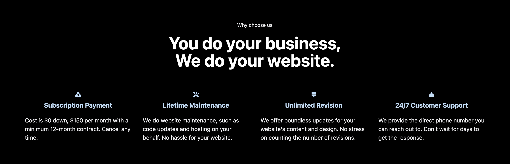

Everyone has had an experience where they could have been more
satisfied while browsing the website. I'm sure you've done so once
by frowning and hitting the go-back arrow or closing the window.
You're not already trying to do such things to this article, are
you? Just kidding. 😂
Are you currently considering creating a website? If so, I hope
you read this article. I have summarized the
three pitfalls you want to avoid
when creating a website. If you do not know this and request web
design, you might
waste all your precious time and money. Please take care of the following and keep your time and wallet
from an unqualified company.
Do you own a website already? Read the article and check if your
website is any of these three. We have a solution for you.
1. Slow loading speed

What would you do if stuck to this screen for 3 seconds? Open a
new tab on your browser now. Then, visit three random websites and
come back. I'll give you 15 seconds.
15, 14, 13, ... (Why are you still there!?)
I'm sure you returned to this article in just 15 seconds. On
average, you've noticed that accessing the website takes
less than a second or two. What about your website? Visitors don't wait more than three
seconds to get to the first page. This very short second, a second
or two, is critical on a website. You probably know this from your
experience.
No matter how good the content is, slow-loading websites
don't even get the opportunity
to show visitors. As a result, the slow speed is one of the
deadliest issues that cause visitors to leave.
Cause
The main reasons for the slow loading speed are the following;
- Large unoptimized image files
- Inefficient code
- Excessive traffic from hosting server
Solution
The simplest solution to improve the loading speed is to optimize
the images. Don't panic. It is technical knowledge, so you don't
have to understand it. Just notice there are things like this, and
that's enough.

The image above is the code responsible for the logo on the
Webtamin homepage. One of the easiest ways to optimize your image
file is by changing the extension. An extension is a character
that comes at the end of the filename to distinguish between file
types (the red underlined part of the image).
Mainly, image files use a lot of .jpg or .png format. Changing
this extension to .webp increases the compression efficiency of
the file. High compression efficiency cuts down the size of image
files, reducing websites' loading time. To reduce loading time, we
changed the original extension of the logo image, .png, to .webp.
Again, you don't have to understand it.

Google provides a website speed measurement tool called PageSpeed
Insights. The screenshot above results from a Webtamin homepage
speed check using the tool.
The Webtamin homepage passed the audit
using all image formats as .webp.
2. Uncomfortable design

You might have experience where you accessed a website with your
phone, and it took a lot of work to read the content in small
letters. Sometimes, only a part of the website appears on the
screen, and you must scroll with your finger. It is because the
website does not have a responsive design*.
*Responsive design: A design method that makes it more visible on
all electronic devices' screens, including cell phones, tablets,
and laptops.
According to the statistics, smartphone usage by the global
population is approximately 87%. The system that sorts the results
when searching Google determines whether a website is visible on a
mobile device, which is a significant measure.
Websites that don't have a responsive design will inevitably
fall behind.
On websites, content is a product, and design is an appearance.
People have doubts about poor appearance products. When people
look at websites with crude design, they intuitively feel that
content will also be useless. Due to lack of appearance, the value of important content may
seem drastically lower.
Cause

Some websites have elements that are aesthetically inconvenient to
look at in addition to responsive designs. Below are the usual
cases;
- Hard-to-read font
- Inharmonious colors
- Unorganized layout*
*Layout: Display placement of menus, articles, pictures, etc.,
that make up the website page.
Solution

The solution is to
apply the responsive design while maintaining visual
consistency. The image above is one of Webtamin customers' websites. The
left is a laptop, and the right is a smartphone. You can see that
the layout is applied to match the size of each screen.
3. Weak content

You've seen so-called translated websites where the content could
be easier to read. But most websites have no problem with it.
Here's the thing.
The most problematic part of the website is the superficial
content. Many websites have a high loading speed with a responsive
design. However, if you look inside, the content is often poor.
This type of content degrades the website's expertise and
credibility. Visitors may be briefly interested in colorful
designs but
quickly become disappointed and disengaged
from meaningless content. What kind of content will make visitors
grow bored?
Cause

The most common example is rambling content full of text. These
texts are usually not interested in what the reader wants. It
often contains too much information or lists the content without
depth. This superficial content cannot move the visitors' hearts.
Business websites that don't touch the hearts of visitors
can't create demand.
Solution
The solution is to create the content that visitors want.
Accomplishing it is not as easy as you might think. Creating such
content requires in-depth consideration of the purpose of people
visiting the website.
- What was the purpose of the visitor's access to the website?
- What is the problem that the visitor has?
- What kind of answer can you give to the question?
The content created after such consideration has an attractive
power. Visitors who find answers to their problems cannot quickly
leave the website.

For example, some Webtamin homepage content has a service
introduction section. People considering a website design request
are always asked, 'What is the difference between these agencies?'
The content of Webtamin's differentiation suggests a solution to
this.
Content that reads the visitor's mind proactively and provides
an answer to it will never fail.
When you request the website design, check the company's
portfolio. If you find any of these three elements on the website,
we recommend you go back or close the window without hesitation,
as in the example earlier.
Don't hesitate to contact us with questions or requests about the
website design.